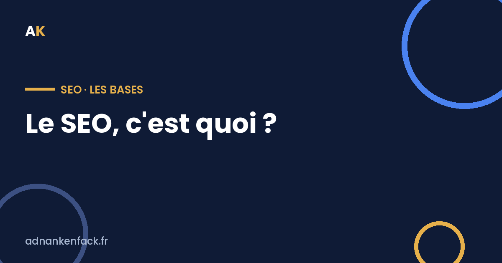

Tout le monde te dit « fais du SEO ». Mais concrètement, c'est quoi, et pourquoi ça peut devenir ta meilleure source de clients ? On décortique, sans jargon.

Le SEO (Search Engine Optimization), c'est le référencement naturel : l'ensemble des techniques pour que ton site apparaisse le plus haut possible dans les résultats de Google, sans payer pour chaque clic.
La grande différence avec la pub (Google Ads / SEA), c'est que le SEO est « gratuit » au clic. Tu n'achètes pas ta place, tu la mérites en étant le résultat le plus pertinent pour ce que les gens tapent.
| SEO (naturel) | SEA (pub) | |
|---|---|---|
| Coût par clic | Gratuit | Payant |
| Délai de résultat | Quelques mois | Immédiat |
| Durée dans le temps | Durable | S'arrête avec le budget |
| Nature | Un actif que tu construis | Un trafic que tu loues |
Quand quelqu'un tape une recherche sur Google, il exprime un besoin précis, à l'instant T. S'il tombe sur ton site en première page, tu captes un prospect déjà en demande — sans avoir dépensé un euro de pub pour ce clic.
Contrairement à la pub qui s'arrête dès que tu coupes le budget, un bon positionnement SEO continue de te ramener du trafic mois après mois. C'est un actif qui travaille pour toi en continu.
Un bon SEO ne cherche pas à écrire beaucoup, il cherche à répondre à la bonne intention de recherche. Un seul article qui répond parfaitement à une question vaut mieux que dix articles creux.
Avant de te lancer tête baissée dans la rédaction d'articles, pose-toi une question : qu'est-ce que ta cible tape réellement sur Google ? C'est là que tout commence. Un bon SEO ne cherche pas à écrire beaucoup, il cherche à répondre à la bonne intention de recherche.
Ensuite, vérifie les bases techniques (ton site est-il bien indexé, rapide, lisible sur mobile ?), puis construis ton contenu autour des recherches qui comptent pour ton business.
Le SEO n'est pas magique, et ce n'est pas instantané — il faut quelques mois avant de voir les résultats. Mais c'est l'un des rares canaux qui te construit un actif durable. La pub te loue des clients ; le SEO t'en fabrique.
Je regarde ton site gratuitement et je te dis ce qui bloque.
Réserver un audit gratuit